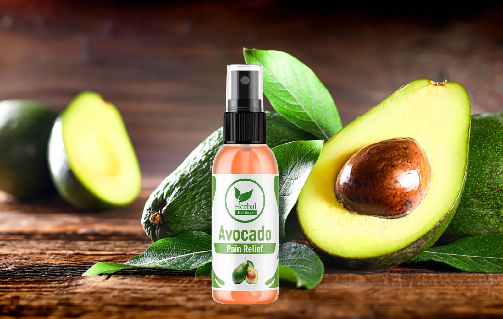
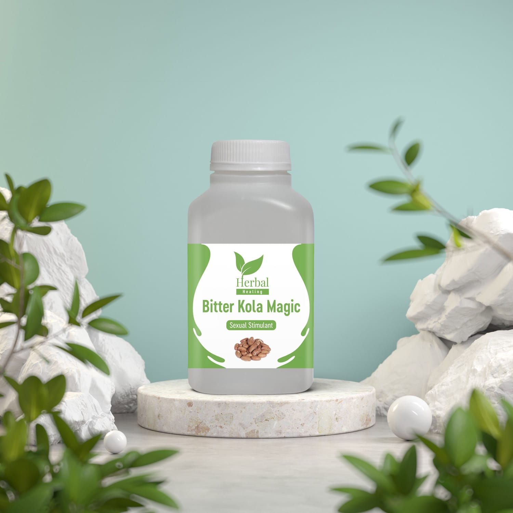
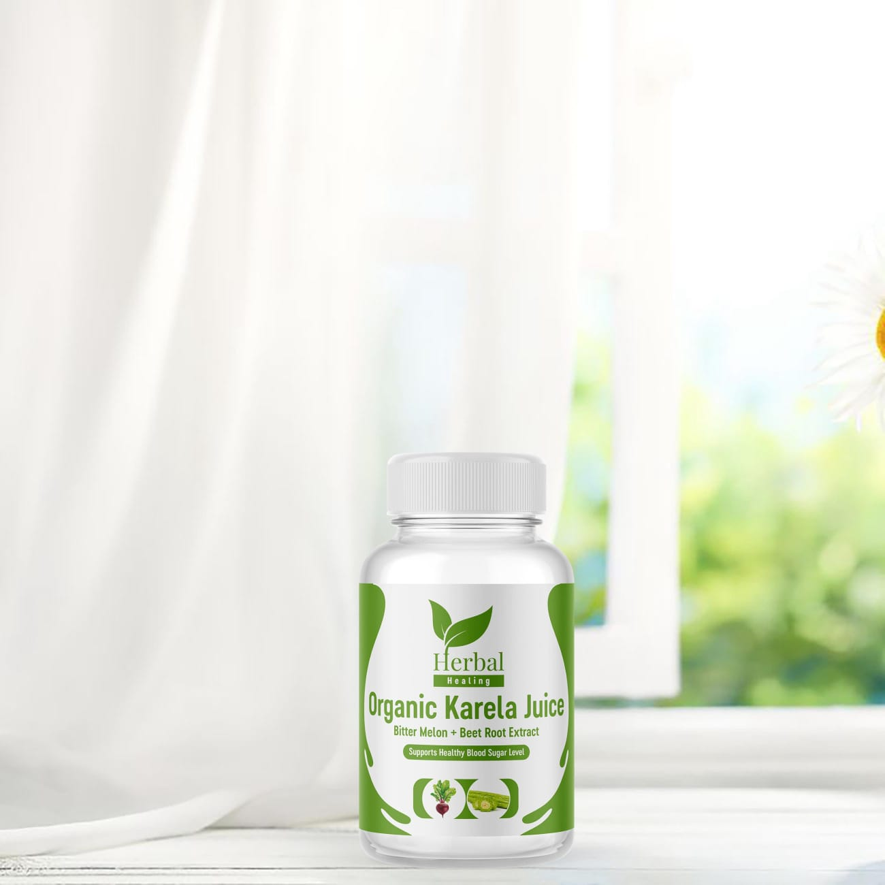

About
Ten years ago, I was diagnosed with type 2 diabetes. At the time, my blood sugar was 498 and my A1C was 12.1. The aggressive treatment that ensued saw me taking seven different pills on a daily basis and for seven years, I struggled to keep it under control. Despite the regimented dieting and exercises, it was frustrating not to be able to eat what I wanted and although the number of pills decreased, they never stopped.
Three years ago, I embarked on a mission to stop taking pills and to reverse my condition with herbs. I enrolled in Herbal School, training to become a certified herbalist while using myself as a subject. I am not there yet, but along the way, I have discovered some wonderful herbs and remedies that I'd love to share, hence this website. I hope the products and recipes hereon help you in your quest to be healthy through naturopathy.


